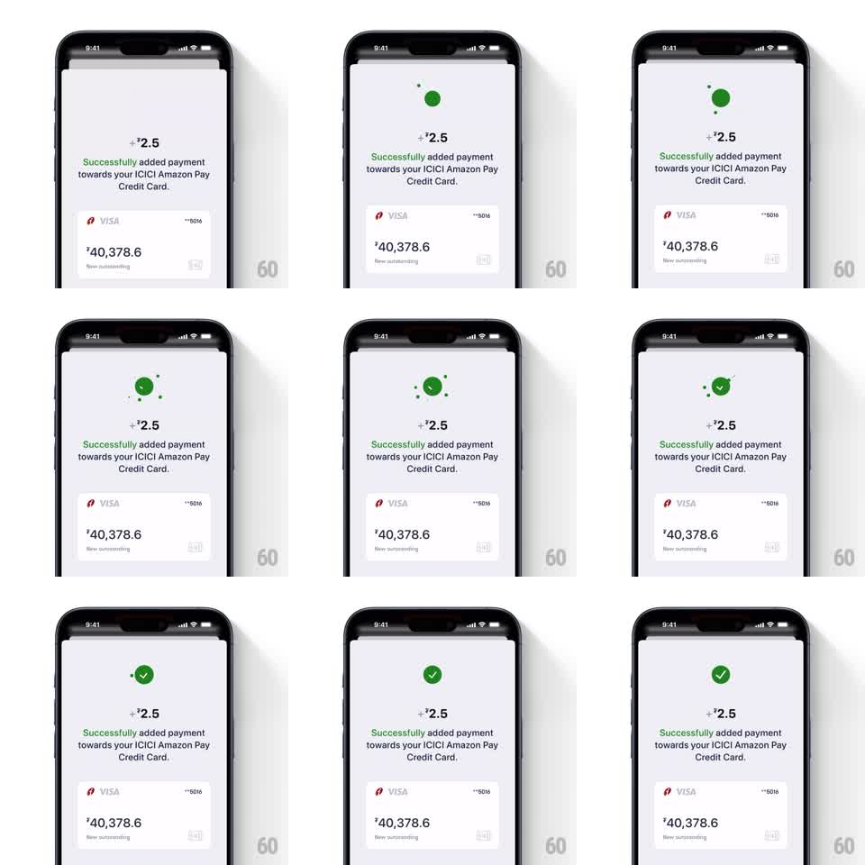

Media
Frame-by-frame

Rebuild this animation 1:1: Fold's payment success moment - a green dot blooms into a circle, a checkmark draws inside it as particles burst outward, and the "+₹2.5" amount, success copy, and updated card tile stagger into place.

Rebuild this animation 1:1: Fold's payment success moment - a green dot blooms into a circle, a checkmark draws inside it as particles burst outward, and the "+₹2.5" amount, success copy, and updated card tile stagger into place. ## Integration Integration: stack-agnostic spec - springs given as stiffness/damping, timed motions as duration + curve; map every value to your framework and animation library of choice. ## Scene Fold's light payment-confirmation screen. At top center, the celebration: a solid green circle with a white checkmark, ringed by small green particles. Below it, the reward amount "+₹2.5", the green success copy "Successfully added payment towards your ICICI Amazon Pay Credit Card.", and a white card tile - VISA logo, masked number, and "₹40,378.6 New outstanding". ## Motion spec Pattern: checkmark bloom with particle burst, ~2s total. - A small green dot drops into position and expands into the full circle (spring stiffness 320 damping 20). - As it lands, the white checkmark draws itself on inside (stroke-on, 300ms) and a ring of small green particles bursts outward from the circle's edge (~12 pieces, 500ms, decelerating with distance). - The "+₹2.5" amount pops in below the circle (spring stiffness 400 damping 22), then the success copy fades up (250ms), then the card tile rises into place (350ms, ease-out) - a clear three-beat stagger. - The card tile settles last; its "New outstanding" value reads as already updated. ## Calibration - One green, one circle - the burst particles stay small and few; the checkmark draw is the hero moment. - The stagger order is fixed: amount, copy, card. ## Reduced motion Circle and check fade in; no particle burst. ## Don't miss - Particles are the same green as the circle - a confetti moment, not multicolor. - The checkmark draws after the circle has fully bloomed, never during the scale-in.